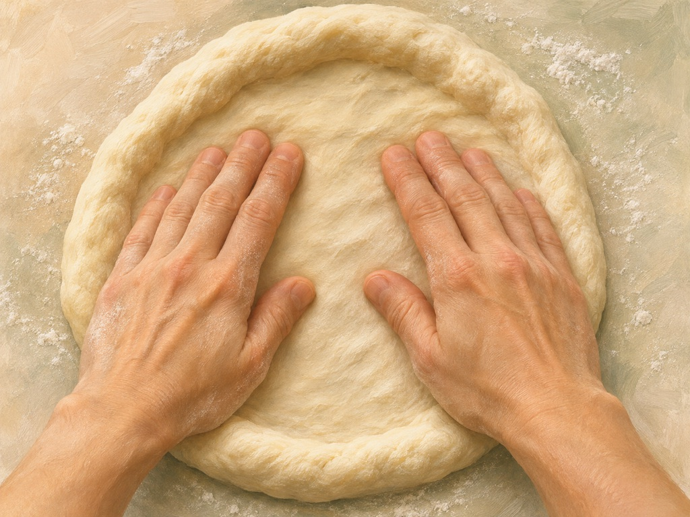
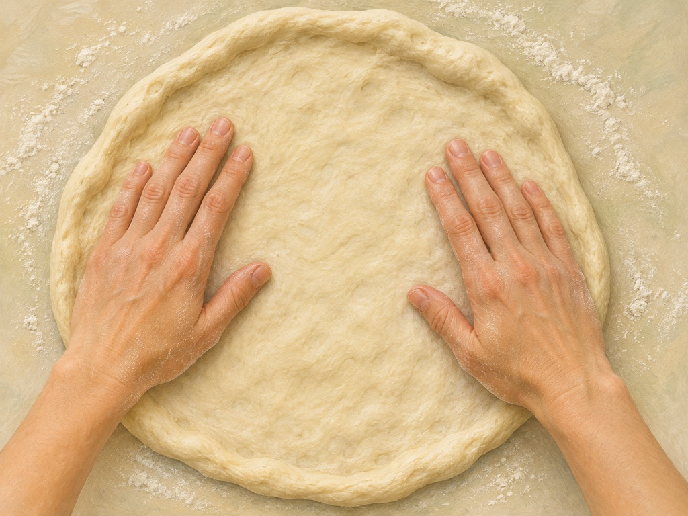
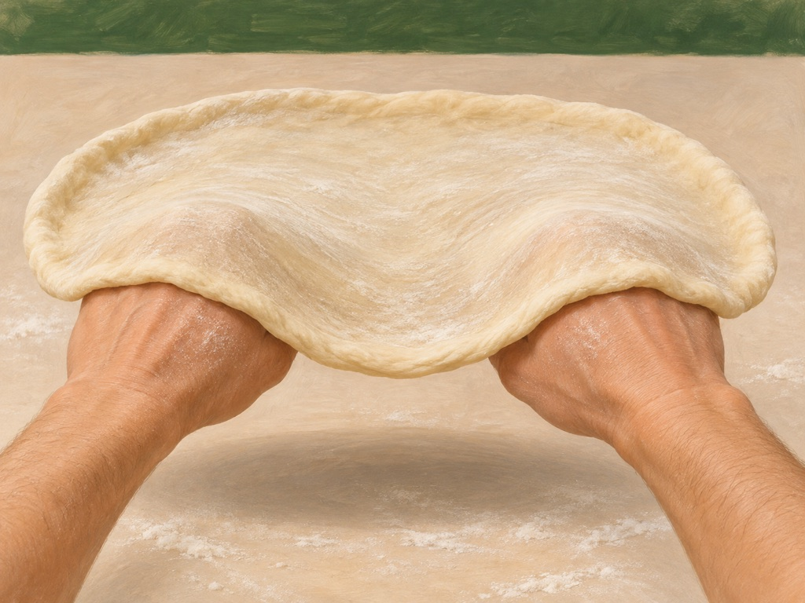

Praktisch thuis pizza maken
Pizzadeeg vormen zonder scheuren of terugveren
Pizzadeeg vormen met de hand: volg drie stappen met illustraties. Leer wat je doet bij terugverend deeg, een dun midden, scheuren of vastplakken.
Op deze pagina
De korte route: druk het midden uit, draai de schijf en verdeel de rek, ondersteun daarna breed. Een kleinere bodem die heel blijft is een beter vertrekpunt dan een grote met een zwak midden.
Is je deegbol klaar om te vormen?
Begin met een soepele, ontspannen bol die afgedekt heeft kunnen rusten. Koud of te jong deeg kan bij elke beweging terugveren. Zet saus, uitgelekte toppings, een deegsteker en de schep klaar. Vorm één bol tegelijk en laat de andere bollen afgedekt.
Haal de bol langs de bodem van de bak los met een steker; trek hem niet aan één rand omhoog. Leg hem op een licht bestoven werkvlak. Knijpt de bol zich meteen weer samen zodra je hem iets breder drukt, lees dan eerst de hulp bij terugveren.
Pizza vormen in drie stappen
De beelden hieronder zijn met AI gemaakte uitlegillustraties van de handposities. Ze zijn geen foto’s van een eigen baksessie. De controlepunten helpen je beoordelen wanneer je verder kunt.

AI-illustratie · De vingertoppen blijven binnen de rand. 1. Druk het midden uit
Leg de bol op een licht bestoven werkvlak. Druk met de kussentjes van je vingers vanuit het midden naar buiten. Houd de buitenrand vrij als je een luchtige rand wilt.
Controle: het midden wordt breder, terwijl je de rand nog als een ring kunt herkennen.
Stop even als de schijf direct terugtrekt. Afdekken en rust geven helpt meer dan harder trekken.

AI-illustratie · Handpositie bij het draaien; de pijl geeft de beweging aan. 2. Draai en werk rondom
Draai de schijf een klein stukje en herhaal het drukken. Werk aan de dikkere delen. Een dunne plek laat je met rust; trek daar niet verder aan.
Controle: het midden wordt gelijkmatiger. Een iets ovale pizza is prima als de bodem heel en verplaatsbaar blijft.
Stop met vergroten als één plek al erg dun of doorschijnend wordt. De vorm hoeft geen perfecte cirkel te zijn.

AI-illustratie · De ruggen van beide handen dragen het deeg. 3. Ondersteun op je knokkels
Til de schijf voorzichtig op de ruggen van twee losjes gesloten handen. Laat de zwaartekracht rustig helpen en verplaats de steun rondom. Houd de handen laag boven het werkvlak. Je kunt ook op het aanrecht verder werken.
Controle: beide handen verdelen het gewicht. Er trekt geen klein punt al het deeg omlaag.
Leg terug zodra je een zwakke plek ziet of de controle verliest. Kies dan liever een kleinere pizza.
De bewegingen sluiten aan bij de vorminstructie van King Arthur Baking: van binnen naar buiten drukken, regelmatig draaien en bij het optillen breed ondersteunen. De afbeeldingen geven geen vaste deegdikte of pizzadiameter aan.
De controle vóór het inschieten
Leg de gevormde bodem op een droge, licht bestoven schep en beleg pas daarna, tenzij je een andere verplaatsingstechniek beheerst. Maak een kleine rustige beweging boven het werkvlak: schuift de hele pizza mee? Controleer dat voordat je naar de hete oven loopt. Een vastzittende pizza komt in de hitte niet vanzelf los.
- De hele bodem past op de schep. Niets hangt over de rand.
- Het midden is heel. Repareer een klein gaatje vóór je saus toevoegt.
- Het beleg ligt licht en verdeeld. Lees zo nodig hoe je een nat midden voorkomt.
- De oven en route zijn klaar. Houd kinderen en huisdieren op afstand van de hete deur en schuif de pizza na het beleggen vlot in de oven.
Terugveren: eerst wachten, dan aanpassen
Blijft de schijf krimpen, leg hem neer en dek hem af. Probeer na ongeveer een kwartier opnieuw met kleine bewegingen. Die pauze is een controlemoment: koud of te jong deeg is niet vanzelf na vijftien minuten klaar.
Blijft het probleem terugkomen, kijk dan naar de tijd tussen opbollen en openen en de temperatuur van het deeg. De rijsgids met terugrekenplanner helpt je die fase eerder in te plannen. Meer water of een flinke hand bloem toevoegen is geen gerichte oplossing voor spanning in het deeg.
Een scheur, een dun midden of vastplakken
- Eén plek wordt dun
- Verplaats je handen naar een dikker deel en ondersteun de schijf breed. Stop met vergroten zodra je de bodem nog heel kunt verplaatsen.
- Een klein gat, nog zonder saus
- Knijp de randjes voorzichtig samen met niet overmatig bebloemde vingers. Controleer of de sluiting heel blijft bij voorzichtig optillen.
- Een groot gat of meerdere zwakke plekken
- Forceer geen grote dunne bodem. Kies een kleinere pizza of een geschikte bakplaat. Een opnieuw samengevouwen schijf heeft extra rust nodig voordat je weer voorzichtig kunt vormen.
- Pizza blijft aan de schep plakken
- Blijf boven het werkvlak en maak het vastzittende deel voorzichtig los. Zoek de oorzaak: natte schep, nat deeg of lang wachten na het beleggen. Houd de schep droog en verwijder oude bloem- en deegresten.
Veelgestelde vragen over pizza vormen
Moet ik een deegroller gebruiken?
Voor de beschreven bodem met een luchtige rand werk je met je handen. Een deegroller is bruikbaar als je juist een andere, plattere bodemstructuur wilt. Hij lost een slechte rijzing of een te zwak deeg niet vanzelf op.
Hoe groot wordt een pizza van 250 gram deeg?
Er is geen vaste diameter: die hangt af van de dikte die je overlaat. Stop met rekken als het midden zwak wordt en kies een formaat dat op je schep en bakondergrond past.
Moet ik het deeg in de lucht gooien?
Nee. Drukken, draaien en breed ondersteunen is genoeg om de beweging te oefenen. Werk laag boven het aanrecht, zodat je de schijf gemakkelijk weer kunt neerleggen.
Begin je nog met mengen? Gebruik het basisproces voor pizzadeeg. Noteer voor je volgende poging bloem, hydratatie, rusttijd en wat er bij het openen gebeurde in het baklog.
Bronnen bij deze pagina
- King Arthur: vormen en rust bij terugverend deeg
- Ooni: openen van een deegbol
- King Arthur Baking — How to stretch pizza dough into a circle — 15 november 2026
Geraadpleegd op 7 november 2026 (tenzij bij de bron anders vermeld). Lees hoe we bronnen en eigen ervaring onderscheiden.